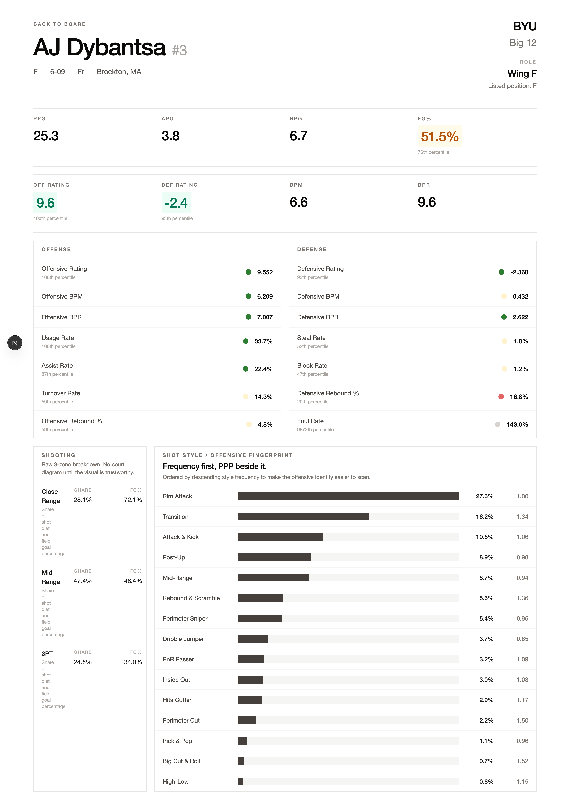

Buzzballr

Buzzballr is a college basketball player analytics platform as well as a scouting dashboard. It has a database of all D1 men's college basketball players along with extensive data on all of them. I created this platform because finding in-depth information and statistics on college players is difficult. While I was trying to analyze some potential rosters during the offseason, I found myself swapping between numerous websites and sources of information to find what I was looking for. So I decided to make a databse and website tailored to my needs which also let me experiment with more novel metrics and customize everything to my liking.
Through this project I gained more experience developing complete products. Learning to use real world data and preparing it to be used for your work was a valuable learning experience. I also learnt the importance of design in product development as a core reason for building this was to improve user experience and make analysis easier. Working with databases and essentially thinking like a data scientist/analyst definitely made me more skillful in those fields and I believe everything I learnt translates well to my career as I worked with noisy, real world data that was pulled from a lot of sources and was not production ready. Half the work was just making it production ready which resembles working in the real world too where you will not get perfect data to work with like in assignments.
View GitHub